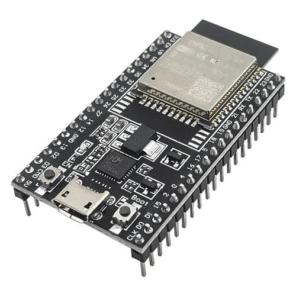

ESP32-WROOM-32 模组

物联网时代的国民级 Wi-Fi/蓝牙双模模组，双核 Xtensa LX6 主频 240MHz，内置 4MB Flash，引出约 38 个引脚，是无数智能插座、传感器与自制设备的心脏。
客观评测
ESP32-WROOM-32 是乐鑫 ESP32 的经典模组，双核 Xtensa LX6 @ 240MHz，内置 4MB Flash，集成 Wi-Fi 802.11 b/g/n 与蓝牙 4.2/BLE，引出约 34 个 GPIO，支持多路 ADC、3 组 UART、4 组 SPI、I2S 与 CAN。模组约 25.5×18mm，是 DIY 物联网设备的默认选项之一。
主观点评
ESP32 之于物联网，就像 555 定时器之于模拟电路——便宜、能干、随手可得。十几块钱的模组自带 Wi-Fi 和蓝牙，做个智能开关、环境监测节点，成本低到可以随手送人。深度睡眠加电池能撑很久，手机 App 联调也方便。偶尔要在供电和天线上踩点坑，但社区方案足够多。要说缺点，就是型号繁杂买错了会麻烦，认准 WROOM-32D/N4 这类常见版本最稳妥。
优点与不足
- Wi-Fi + 蓝牙双模，十余元价位几乎无对手
- 深度睡眠功耗极低，电池供电方案成熟
- ESP-IDF 与 Arduino 生态庞大，开源方案随手可抄
- 3.3V 供电需注意纹波，天线区域对布板敏感
- 仅 2.4GHz Wi-Fi，复杂电磁环境下稳定性一般
参数规格
| 芯片 | 乐鑫 ESP32（ESP32-D0WD 系） |
|---|---|
| 内核 | 双核 Xtensa LX6 |
| 主频 | 240MHz |
| Flash | 模组内置 4MB SPI Flash |
| SRAM | 约 520KB（含内部与外部 ROM/SRAM 资源） |
| 无线 | Wi-Fi 802.11 b/g/n（2.4GHz）、蓝牙 4.2 / BLE |
| GPIO | 模组引出约 34 个可用 GPIO（QFN 共 38 引脚） |
| ADC | 2 组 12-bit SAR ADC，最多 18 通道 |
| 通信接口 | UART ×3、SPI ×4、I2C ×2、I2S、CAN（TWAI） |
| 工作电压 | 3.0-3.6V（典型 3.3V） |
| 天线 | 板载 PCB 天线（另有外置天线版本） |
| 封装尺寸 | 约 25.5 × 18 × 3.1mm |
| 开发环境 | ESP-IDF、Arduino、MicroPython、Lua（NodeMCU） |